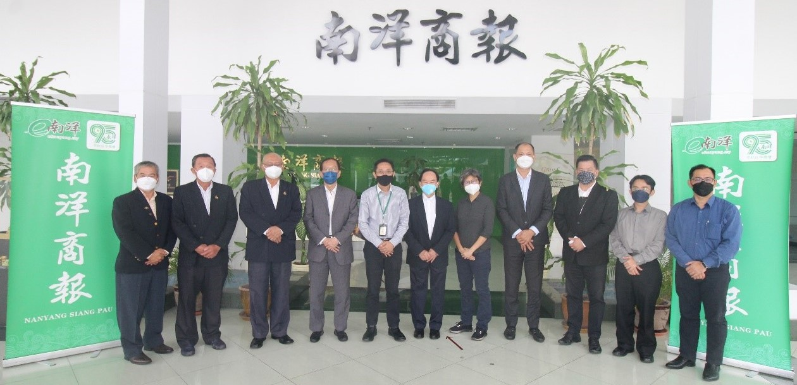

董总代表团拜访中文媒体高层
2022年4月15日，董总主席陈大锦率领董总领导团队拜访了国内3家华文新闻媒体高层，分别为星洲日报、南洋商报和东方日报。
此次拜访的主要目的除了加强与媒体的联系，也宣导董总2022年度计划与发展方向，以及汇报董总华教综合大厦筹建之进展。此外，董总亦将推动多项华文独中教育改革工作项目，包括课程改革、三语口试、教育培训、独中校长交流会以及多项教研计划等。本会亦借此机会感谢各大媒体长期积极配合报导华教课题，让社会大众了解华教发展状况以及所面对的问题与挑战。
陈大锦主席在交流会上表示，董总华教综合大厦筹建计划已筹获3,000万令吉，原已达到最初之筹款目标；然而因新冠疫情与俄乌战争影响全球经济，导致百物上扬，部分建材价格飙升，大厦建筑费也水涨船高，建筑费用也增至4,200万令吉。署理主席陈友信补充，董总华教综合大厦除了作为华文独中统考的评阅场地外，亦作为独中教师的培训中心。有了适合的教师培训中心后，将可安排海内外教育专家前来，让教师在假期期间接受培训。
董总代表团成员包括主席陈大锦、署理主席陈友信、副主席杨应俊、副主席卢成良、秘书长庄俊隆、财政杨安山、常务委员涂兴全、执行长梁胜义、副执行长（总务处）兼资料与档案局局主任锺伟前、会务与组织局执行员陈智崇和黄奕燊。